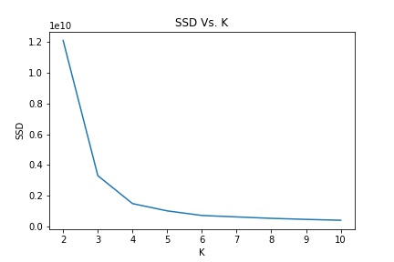
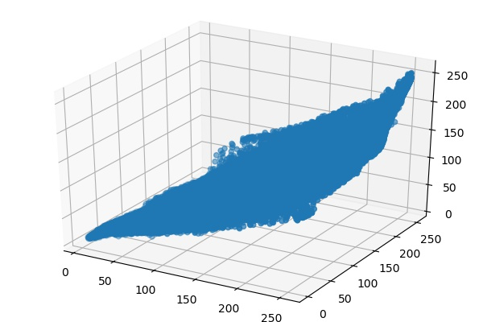
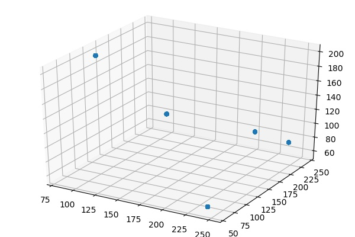
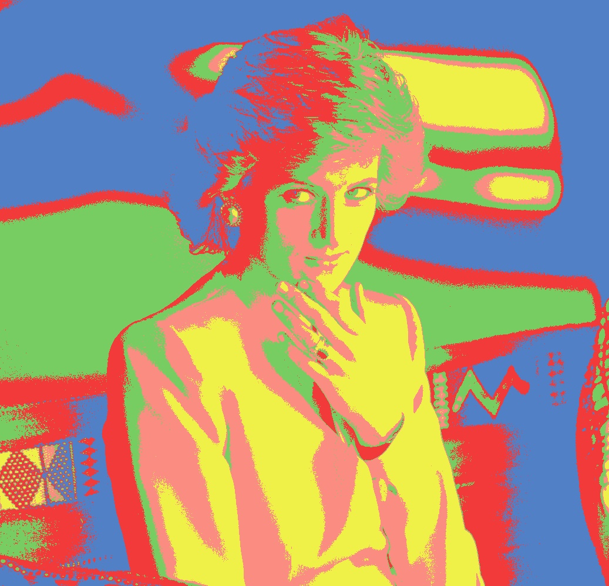

CS 445 Final Project: Image Segmentation
A "symbolic link": Leo Chen
Introduction
For our final project, my partner and I decided to implement Image Segmentation - the process
of partitioning a digital image into multiple segments (sets of pixels, also known as image objects).
We achieved our result using two clustering algorithms: K-means and Mean Shift. In this project page,
we present you the results of these two different algorithms, the pros and cons of each algorithm,
and the "Andy Warhol" effect we added.
Comparison of Results
Princess Diana Original
Princess Diana K-Means

Princess Diana Mean Shift

Skyline Original

Skyline K-Means

Skyline Mean Shift

G-Wagon Original

G-Wagon K-Means

G-Wagon Mean Shift

K-Means in Detail
Algorithm Overview
K-means is probably the most intuitive and straight-forward approach for Image Segmentation -
In order to segment the image, we simply define a K and divide the image into K regions based
on color similarity. A detailed implementation of K-Means is shown below:
Initialization:
- Choose K cluster center
Repeat:
- Assignment Step: For every point, find its closest center.
- Update Step: Update every center as the mean of its points
Until:
- The maximum number of iterations is reached, or
- No changes during the assignment step, or
- The average distortion per point drops very little.
Note: K-Means objective minimizes the total distortion (sum of squared distances of points
from their cluster centers) as shown in the below equation.
Finding K
One of the biggest drawbacks of using K-Means is that we need to manually find the most suitable K.
As suggested in Towards Data Science
as well as in Stanford Vision Lab,
we tried different values of K and plotted the
Sum-of-Square Differences versus K to find the "elbow point" where adding one more cluster does not
reduce much of the SSD. For illustration purpose, we plotted the SSD Vs. K for the Princess Diana image,
and as indicated by the plot, the "elbow point" here should be 5.

Princess Diana Example
Original Image
Original Image Grouping

Segmented Image
Segmented Image Grouping

K-Means with K ranging from 1 to 8

During experimenting with K-Means, we utilized the clustering of K-Means and reassigned pixel values
to these pixel groups to achieve a pop art effect - specifically, we implemented an
Andy Warhol filter
as shown below.
K = 3

K = 5

K = 6

Conclusions on K-Means
In conclusion, K-Means is a relatively simple and fast algorithm for small K, and it is easy to implement.
Yet it also has some non negligible cons: 1. Manually choosing K is a relatively heavy overhead. 2. K-Means
is very sensitive to outliers. 3. All clusters have the same values (distance feature is non-adaptive). Therefore
in industry today, K-Means is rarely used in pixel segmentation.
Mean Shift in Detail
References